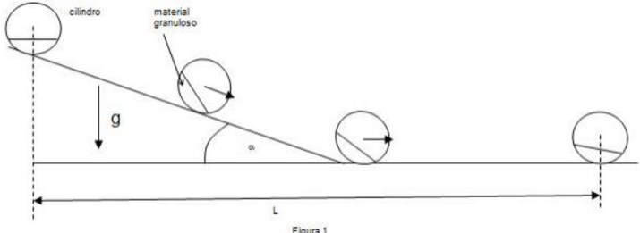
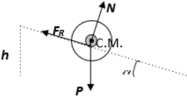
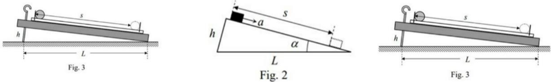

Plano inclinado
PE30. EPES N° 54 Gobernador Juan J. Silva Ciudad de Formosa.
Plano inclinado. Objetivo Se va a estudiar experimentalmente el descenso de una esfera por un plano inclinado de pendiente variable. En concreto se va a determinar el factor geométrico que diferencia la aceleración de descenso en este experimento de la que tendría un cuerpo que deslizase sin fricción por un plano inclinado.
Materiales
-
Carril de aluminio u otro material.
-
Pegamento o cinta.
-
Topes de plástico y aluminio.
-
Libros para elevar el plano.
-
Esfera de acero.
160 - OAF 2020
-
Cinta métrica.
-
Cronómetro.
Todos los materiales mencionados pueden ser reemplazados por otros que se encuentren al alcance del estudiante.
Montaje; procedimiento experimental Es importante improvisar un carril que determine la trayectoria de la esfera, esta debe estar inclinada cómo muestra en la figura 1. Tenga cuidado de no doblar ni mellar el carril, ya que cualquier imperfección influiría en los resultados de la prueba.
- Coloque topes o marcas sobre el carril que determinen el punto de partida y llegada de la esfera.
- Sitúe el montaje en una zona de la mesa que le permita trabajar y tomar notas con comodidad. Asegúrese de que el sistema sea estable durante su funcionamiento.
- Procure mantener limpios el carril y la esfera, para evitar irregularidades y fuerzas de adherencia.
- Recuerde que va a tener que modificar el ángulo de inclinación del plano, por lo que el sistema no debe deslizarse.
- Va a medir el tiempo de descenso de la esfera por el carril para diferentes desniveles. Antes de realizar medidas definitivas es conveniente que adquiera práctica con el manejo del cronómetro.
- Tenga en cuenta que la esfera debe partir con velocidad inicial nula. Por tanto, no debes empujarla cuando la sueltes, ni presionarla contra el tope de partida, que podría darle un impulso inicial.
- Para determinar el tiempo de descenso con cada desnivel, es conveniente que realice un mínimo de cinco medidas y tome como resultado el valor medio.
Modelo teórico.
En un experimento idealizado, supongamos un cuerpo que desciende deslizando sin
fricción por un plano inclinado de ángulo α respecto a la horizontal (figura 2). La
aceleración con que desciende el cuerpo es
(1)
La aceleración puede determinarse experimentalmente midiendo el tiempo t que tarda el
cuerpo en recorrer una cierta distancia s, partiendo del reposo. Como el movimiento es
uniformemente acelerado
s=1/2 at^2
O sea
a=2s/t
(2) El experimento podría plantearse como una práctica de laboratorio para determinar la aceleración de la gravedad, g, con el siguiente método:
- Para un valor de s fijo y conocido, se cronometran los tiempos de descenso por el plano para diversos valores de h. Aplicando (2) se calcula la aceleración en cada caso.
OAF 2020- 161
-
Para que los tiempos de descenso sean altos y puedan cronometrarse manualmente con buena precisión relativa, interesa que h sea pequeña, por lo que esta altura es difícil de medir con precisión. En nuestro dispositivo experimental no es necesario conocer el valor de esta altura, como se verá a continuación. Basta con realizar sucesivas medidas incrementando h en una cantidad constante, correspondiente a una vuelta del tornillo. Si la altura inicial es h0 y se gira en sentido ascendente n vueltas el tornillo, de paso de rosca d, la altura alcanzada es
h_n=h_0+nd (3) -
Se representan gráficamente los puntos experimentales (x, y) = (n, a). Teniendo en cuenta (1) y (3), estos puntos deberían ajustarse a una línea recta2 con pendiente gd/L, independientemente del valor de la L altura inicial h0.
-
Por tanto, supuesto que d y L son conocidas, para obtener g bastaría con determinar la pendiente de la recta que mejor se ajusta a los puntos experimentales anteriores.
En un experimento real es difícil eliminar el rozamiento entre el cuerpo y el plano
inclinado. Las pérdidas energéticas por fricción podrían minimizarse mediante un colchón
de aire que impidiese el contacto directo entre el cuerpo y el plano. Pero es mucho más
sencillo y económico emplear una esfera rígida que desciende rodando sin deslizar. En
estas circunstancias, el punto de contacto de la esfera con el plano tiene velocidad nula
(no hay deslizamiento relativo), la fuerza de rozamiento no realiza trabajo y no se pierde
energía por fricción.
Pero la aceleración del movimiento del centro de la esfera ya no es la dada en (1), puesto
que la energía potencial gravitatoria inicial no sólo se convierte en energía cinética de
traslación (movimiento del centro de la esfera) sino además en energía cinética de
rotación (giro de la masa de la esfera en torno a su centro). Por ello, la aceleración del
centro de la esfera se reduce en un cierto factor F > 1.
a=g h/FL
El principal objetivo de esta prueba experimental no es determinar el valor de la aceleración de la gravedad, que es bien conocido, sino el valor del factor geométrico F del dispositivo experimental empleado3, y hacer una estimación de su incertidumbre.
Medidas y preguntas
- Mida el recorrido de la bola, s, y la distancia entre los puntos de apoyo del plano sobre la mesa, L, (figura 3). Anote los resultados en la hoja de respuestas.
- Ajuste la altura h hasta conseguir que el tiempo de descenso de la bola esté entre 4 y 5 s. Ésta va a ser la situación inicial de tu serie de medidas, es decir h = h0. Mida varias veces el tiempo de descenso de la bola, calcule su valor medio y la aceleración correspondiente. Anote tus medidas y resultados en la tabla de la hoja de respuestas. Repita el proceso anterior incrementando h, hasta que el tiempo de descenso sea inferior a 2,3 s. 3) Represente gráficamente en un papel milimetrado los puntos experimentales a (en ordenadas) frente a n (en abscisas).
- Represente gráficamente en un papel milimetrado los puntos experimentales a (en ordenadas) frente a n (en abscisas).
- Obtenga la pendiente, p, y la ordenada en el origen, c, de la recta que mejor se ajusta a los puntos del gráfico.
- Deduzca los valores del factor geométrico, F, y de la altura inicial, h0.
- Haga una estimación de la incertidumbre (margen de error) de la pendiente de la recta, Δp. Calcule la incertidumbre transmitida al valor del factor geométrico, ΔFp.
- Si la incertidumbre del paso de rosca del tornillo es mm Δd = 0,01 , calcule la incertidumbre transmitida al valor del factor geométrico, ΔFd .
- Teniendo únicamente en cuenta las dos fuentes de error anteriores, calcule la incertidumbre total de F.
Datos: Aceleración de la gravedad: 2 g = 9,81 m/s Paso de rosca del tornillo: mm
162 - OAF 2020



Topic: Rotational Dynamics Metodi: Conservation of Energy, Experimental Data Analysis, Graph Linearization Competenze: Physical Reasoning, Experimental Data Analysis Objects: Sphere, Inclined Plane Fonte: Testo (PDF) — p.7
Piano inclinato
PE30. EPES N° 54 Governatore Juan J. Silva Città di Formosa.
Piano inclinato. Obiettivo Si studierà sperimentalmente la discesa di una sfera da un piano inclinato di pendenza variabile. In particolare, si intende determinare il fattore geometrico che distingue la Accelerazione di discesa in questo esperimento da cui avrebbe un corpo che scivolava. senza attrito da un piano inclinato.
Materiali
- Un’artiglieria in alluminio o altro materiale.
- Colla o cinta.
- Topi di plastica e alluminio.
- Libri per alzare il piano.
- Sfera di acciaio.
160 - OAF 2020
- Cintura metrica.
- Un cronometro. Tutti i materiali di cui sopra possono essere sostituiti da altri materiali che si trovate a portata di mano dello studente.
Montaggio; procedura sperimentale È importante improvvisare un binario che determina il percorso della sfera, questo deve essere inclinata come mostra la figura 1. Attenzione a non piegare o a non mescolare il la pista, poiché qualsiasi imperfezione influenzerebbe i risultati del test.
- Mettete i tappi o le marcature sul binario che determinino il punto di partenza e di arrivo della sfera.
- Metti il montaggio in una zona del tavolo che ti permette di lavorare e prendere note con comodità. Assicurarsi che il sistema sia stabile durante il suo funzionamento.
- Cerca di mantenere pulita la pista e la sfera, per evitare irregolarità e forze di l’adesione.
- Ricorda che dovrai modificare l’angolo di inclinamento del piano, quindi il sistema non deve scivolare.
- Metrà il tempo di discesa della sfera per il binario per diversi
- Non sono a livello. Prima di prendere misure definitive è opportuno che acquista pratica con il cronometro.
- Si noti che la sfera deve partire a velocità iniziale zero. Quindi, no. non deve essere spinta quando si lascia andare, né premuta contro il cappio di partenza, che Potrebbe dargli un impulso iniziale.
- Per determinare il tempo di discesa con ogni svantaggio, è opportuno che effettuare un minimo di cinque misure e ottenere il valore medio.
Modello teorico.
In un esperimento idealizzato, supponiamo un corpo che scende scivolando senza
Friccia per un piano inclinato da un angolo α rispetto alla orizzontale (Figura 2). La
L’accelerazione con cui il corpo scende è
(1)
L’accelerazione può essere determinata sperimentalmente misurando il tempo t impiegato per il
Il corpo deve percorrere una certa distanza, partendo dal riposo. Come è il movimento
uniformemente accelerato
s=1/2 at^2
Cioè …
a=2s/t
(2) L’esperimento potrebbe essere presentato come una pratica di laboratorio per determinare la accelerazione della gravità, g, con il seguente metodo:
- Per un valore di s fisso e conosciuto, i tempi di discesa sono cronometrati per il piano per diversi valori di h. Applicando (2) si calcola l’accelerazione in ogni
- Il caso.
OAF 2020- 161
-
Per rendere i tempi di scesa elevati e possono essere cronometrati manualmente con buona precisione relativa, è interessante che h sia piccola, quindi questa altezza è difficile da misurare con precisione. Nel nostro dispositivo sperimentale non è necessario. conoscere il valore di questa altezza, come vedremo di seguito. Basta con fare successive misure aumentando h in quantità costanti, corrispondente a un giro di tornello. Se l’altezza iniziale è h0 e si gira in direzione ascendente n Girare lo scheggio, passare dal filo d, l’altezza raggiunta è h_n=h_0+nd (3)
-
I punti sperimentali (x, y) = (n, a) sono rappresentati graficamente. Avendo in Conti (1) e (3), questi punti dovrebbero essere fissati in una linea retta2 con pendenza gd/L, indipendentemente dal valore dell’altezza iniziale L h0.
-
Quindi, se d e L sono conosciuti, per ottenere g basta determinare la pendice della retta che meglio si adatta ai precedenti punti sperimentali.
In un esperimento reale è difficile eliminare il raggio tra il corpo e il piano. inclinato. I perditi energetici da attrito potrebbero essere ridotti con un materasso. di aria che impedisse il contatto diretto tra il corpo e il piano. Ma è molto più che questo. semplice e economico utilizzare una sfera rigida che scende senza scivolare. En In queste circostanze, il punto di contatto della sfera con il piano ha velocità zero. (non c’è scivolamento relativo), la forza di ruggine non fa lavoro e non si perde energia da attrito. Ma l’accelerazione del movimento del centro della sfera non è più quella data in (1), posto che l’energia gravitazionale potenziale iniziale non solo si trasforma in energia cinetica di La trasformazione (movimento del centro della sfera) ma anche in energia cinetica di rotazione (torsione della massa della sfera intorno al suo centro). Per questo, l’accelerazione del Il centro della sfera si riduce di un certo fattore F > 1. a=g h/FL
L’obiettivo principale di questo test sperimentale non è determinare il valore di l’accelerazione della gravità, che è ben nota, ma il valore del fattore geometrico F La Commissione ha inoltre esaminato la situazione dei dispositivi di prova utilizzati e ha fatto una stima dell’incertezza.
Misure e domande
- Misura il percorso della palla, s, e la distanza tra i punti di supporto del piano sul tavolo, L, (Figura 3). Nota i risultati sulla scheda delle risposte.
- Aggiusta l’altezza h fino a che il tempo di scalo della palla sia tra 4 y 5 s. Questa sarà la situazione iniziale della serie di misure, cioè h = h0. - Mida . Molte volte il tempo di scesa della palla, calcola il suo valore medio e la l’accelerazione corrispondente. Nota le tue misure e risultati nella tabella di foglio di risposte. Ripeti il processo precedente aumentando h, fino a quando il tempo di il calo è inferiore a 2,3 s. 3) Rappresentazione grafica su carta millimetrica i punti sperimentali a (in ordine) rispetto a n (in abscissi).
- Rappresenta graficamente su un foglio di millimetro i punti sperimentali a (in) ordinate) rispetto a n (in abscisse).
- Ottieni la pendenza, p, e la ordinata all’origine, c, della retta che si regola i punti del grafico.
- Deduce i valori del fattore geometrico, F, e dell’altezza iniziale, h0.
- Si calcola l’incertezza (margine di errore) della pendenza della Retta, Δp. Calcolare l’incertezza trasmessa al valore del fattore geometrico, ΔFp.
- Se l’ incertezza del passaggio della retta del tornello è mm Δd = 0,01 calcola la Infatti, il valore di un fattore geometrico è il valore di un fattore geometrico.
- Considerando solo le due fonti di errore precedenti, calcolare la F. totale incertezza.
Data: Accelerazione della gravità: 2 g = 9,81 m/s Passaggio della retta dello scheggia: mm
162 - OAF 2020
Topic: Rotational Dynamics Metodi: Conservation of Energy, Experimental Data Analysis, Graph Linearization Competenze: Physical Reasoning, Experimental Data Analysis Objects: Sphere, Inclined Plane Fonte: Testo (PDF) — p.7
The following table shows the following:
PE30. The Commission has also adopted a number of proposals for the establishment of a European Parliamentary Committee on the Environment. Silva The city of Formosa.
It’s a flat one. The objective The descent of a sphere by an inclined plane of variable slope. In particular, the geometric factor which differentiates the Acceleration of descent in this experiment from which you would have a body that would slide. without friction on a sloping plane.
Materials
- Aluminum rail or other material.
- Glue or tape.
- Plastic and aluminum tops.
- Books to raise the plane.
- It’s a steel ball.
The Commission shall adopt implementing acts in accordance with Article 21 of Regulation (EU) No 1303/2013.
- It’s a tape recorder.
- It’s a timekeeper. All the materials mentioned above can be replaced by others which are Find them within the student’s reach.
Assembly; experimental procedure It’s important to improvise a lane that determines the path of the sphere, this should be tilted as shown in Figure 1. Be careful not to bend or blend the The test results would be affected by any imperfections.
- Place tiles or markings on the lane to determine the point of departure and arrival of the sphere.
- Place the mounting in a table area that allows you to work and take notes with I’m not sure. Make sure the system is stable during operation.
- Try to keep the lane and the sphere clean, to avoid irregularities and forces of The Commission has not yet adopted a decision.
- Remember you’re going to have to change the angle of inclination of the plane, so The system must not slide.
- It’s going to measure the time the sphere descends down the lane for different I’m not going to level them. Before taking definitive measures it is appropriate to acquire The time-range is very practical.
- Please note that the sphere must depart at zero initial velocity. So, no. You must push it when you release it, or press it against the starting cap, which I could give you an initial boost.
- To determine the descent time with each level change, it is appropriate to perform a minimum of five measurements and take the mean.
Theoretical model.
In an idealized experiment, let’s say a body slides down without a slide.
friction by an inclined plane at an angle α relative to the horizontal (Figure 2). La
The acceleration at which the body descends is
(1)
Acceleration can be determined experimentally by measuring the time t takes the
The body is travelling a certain distance from the rest. How the movement is
uniformly accelerated
s=1/2 at^2
I mean ,
a=2s/t
(2) The experiment could be proposed as a laboratory practice to determine the gravity acceleration, g, by the following method:
- For a fixed and known s value, downtime is timed by the plane for various values of h. Applying (2) the acceleration is calculated for each case.
The Commission shall adopt implementing acts in accordance with Article 21 of this Regulation.
-
So the descent times are high and can be manually timed. With good relative accuracy, it’s interesting that h is small, so this height is difficult to measure accurately. In our experimental device it is not necessary to know the value of this height, as will be seen below. Just do it . successive measures increasing h by a constant amount, corresponding to A spin of the screw. If the starting height is h0 and it turns upwards n Turn the screw, pass the thread d, the height reached is h_n=h_0+nd (3)
-
The experimental points (x, y) = (n, a) are represented graphically. Having in Count (1) and (3), these points should be adjusted to a straight line with slope gd/L, irrespective of the value of the starting height L h0.
-
So, assuming d and L are known, to get g it would be enough to determine the slope of the straight line which best fits the previous experimental points.
In a real experiment , it ‘s difficult to remove the friction between the body and the plane . I’m not going to lie. The energy losses from friction could be minimized by a mattress . of air that would prevent direct contact between the body and the plane. But it ‘s much more than that . It is simple and economical to use a rigid sphere that rolls down without slipping. En In these circumstances, the point of contact of the sphere with the plane has zero velocity. (no relative slip), the friction force does not work and is not lost energy by friction. But the acceleration of the center of the sphere is no longer given in (1), given The initial gravitational potential energy is not only converted into kinetic energy. The first is the transition (movement of the centre of the sphere) but also in kinetic energy of the sphere. rotation (spinning of the mass of the sphere around its centre). The acceleration of the The centre of the sphere is reduced by a certain factor F > 1. a=g h/FL
The main objective of this experimental test is not to determine the value of the The acceleration of gravity, which is well known, but the value of the geometric factor F The experimental device used3 and to estimate its uncertainty.
Measures and questions
- Measure the ball’s path, s, and the distance between the support points of the plane The table, L, (Figure 3) Write down the results on the answer sheet.
- Adjust the h height until the ball’s descent time is between 4 y 5 s. This is going to be the initial position of your measurement series, so h = h0. I ‘m going to . Several times the ball’s descent time, calculate its mean value and the the corresponding acceleration. Write down your measurements and results on the sheet. I’m not sure. Repeat the previous process by increasing h, until the time of The decrease is less than 2.3 s. 3) It is graphically represented on a millimeter paper the experimental points a (in ordered) versus n (in abscises).
- Graphically represent on a millimeter paper the experimental points to (in) (in abscesses) versus n.
- Get the slope, p, and the ordered at the origin, c, of the straight line that is best It fits the points on the graph.
- Subtract the values of the geometric factor, F, and the initial height, h0.
- Estimate the uncertainty (error margin) of the slope of the straight, Δp. Calculate the transmitted uncertainty to the value of the geometric factor, ΔFp.
- If the uncertainty of the screw thread pass is mm Δd = 0.01 , calculate the Uncertainty transmitted to the value of the geometric factor, ΔFd.
- Taking into account only the two above sources of error, calculate the Total uncertainty of F.
Data: Gravity acceleration: 2 g = 9.81 m/s Screw thread step: mm
The following is the list of the countries of the European Union:
Topic: Rotational Dynamics Metodi: Conservation of Energy, Experimental Data Analysis, Graph Linearization Competenze: Physical Reasoning, Experimental Data Analysis Objects: Sphere, Inclined Plane Fonte: Testo (PDF) — p.7